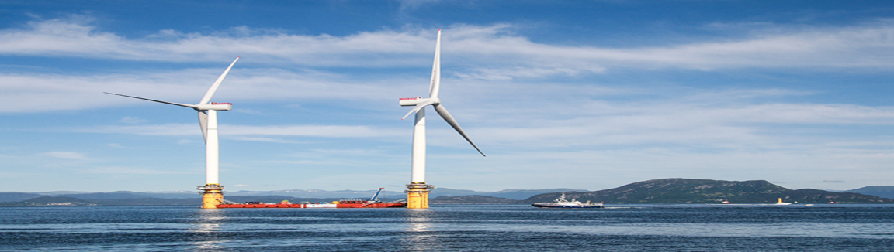

Marine Renewable Energy
Photo Credit: Floating wind turbines via Shuttershock
Here is a great article with an overview about marine renewable energy in Canada, released by the Government of Canada. Full article available here: https://www.nrcan.gc.ca/energy/energy-sources-distribution/renewables/marine-energy/what-marine-renewable-energy/7371
All movement is energy. The world’s tides, ocean waves and river currents all contain kinetic and potential energy that can be used to drive turbines and produce electricity, reducing our dependence on fossil fuels. Even the differences in salinity (salt levels) and temperature that occur in bodies of water create dynamic forces that can be used to produce power. These different forms of marine renewable energy will be available for as long as the tides continue to ebb and flow, and the rivers continue to run.
Snapshot of the sector: Canada’s marine energy sector is much like the country and its population in general: regionalized and relatively small. Yet its achievements are capturing worldwide attention. Canadian innovators are making important progress in areas such as large-scale marine technology and offshore deployments.
Tidal current energy: Tidal energy is produced by the rise and fall of tides from the gravitational influence of the sun and moon. It can take two forms; tidal current and tidal range. Currently, Canada is not pursuing energy extraction from tidal range due to high capital costs and environmental concerns. Canada is, however, pursuing tidal current energy extractions. Tidal currents are reliable and predictable, offering great potential to power turbines and generating electricity. Some 190 tidal power sites have been identified off Canada’s coasts with a total estimated capacity of 42,000 MW (total mean annual wave power) – more than 63 percent of the country’s annual total consumption. Nunavut has the country’s greatest abundance of tidal resources, while British Columbia has the most sites with potential power greater than 1 MW. Not all of this potential energy can be converted into usable power without noticeable impact on tides and tidal flows. Tidal energy, however, is scalable. It can start with one turbine and over time scale up to multiple turbines. Tidal current energy is a renewable, zero-emission option with high power density.
Wave energy: Wave energy is a concentrated form of solar energy. Ocean waves form as a result of the sun heating the ocean surface. The motion of the waves can be used to power turbines or other power take-off systems in order to generate electricity. The waters off Canada’s Pacific and Atlantic coasts are rich with wave energy resources. Roughly 37,000 MW exists off Canada’s Pacific coast, equal to more than 55 per cent of the country’s annual electricity consumption. The potential capacity off Canada’s Atlantic coast is even greater at about 146,500 MW – more than double the current electricity demand. As with tidal energy, not all of these available wave energy resources can be realized as usable power due to various factors including socio-economics, the harsh ocean environment, power conversion losses, and cost.
River Hydrokinetic energy: River Hydrokinetic energy is produced by extracting the kinetic energy from flowing water in rivers. River hydrokinetic energy technology is similar to tidal energy; however, rivers only flows in one direction and river hydrokinetic energy is available at all times, while there is water flowing. The total theoretical potential in Canada is estimated at 340 GW (gigawatts). The highest potential is located in British Columbia, Quebec, and the Northwest Territories.